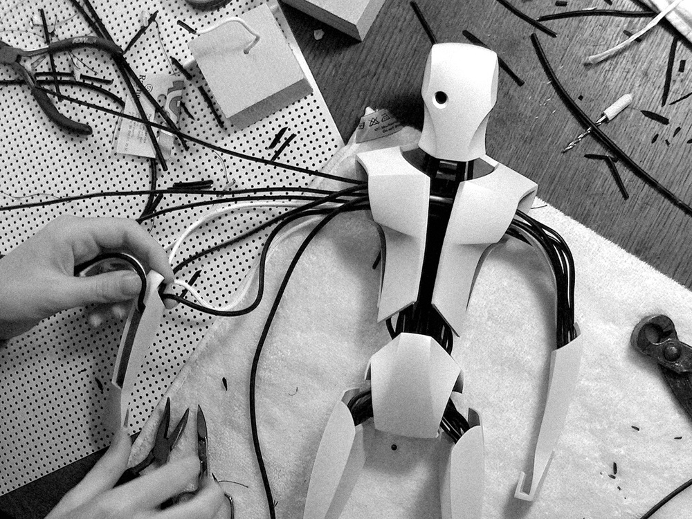
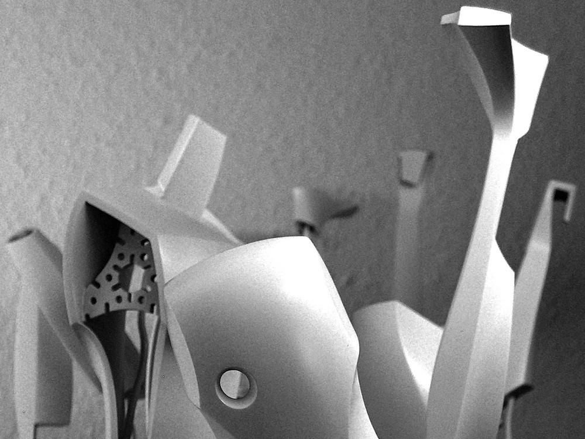
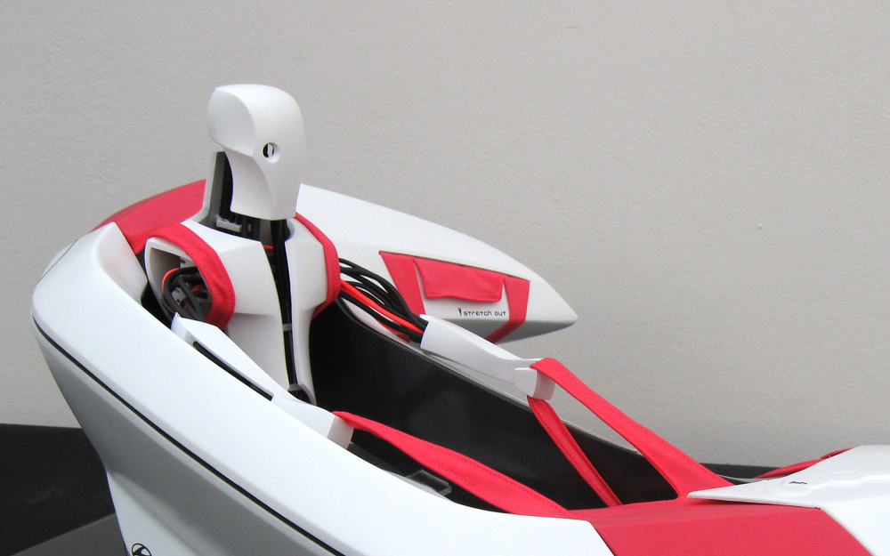
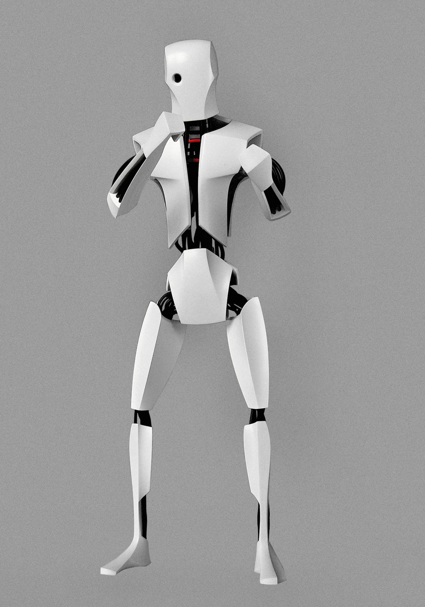
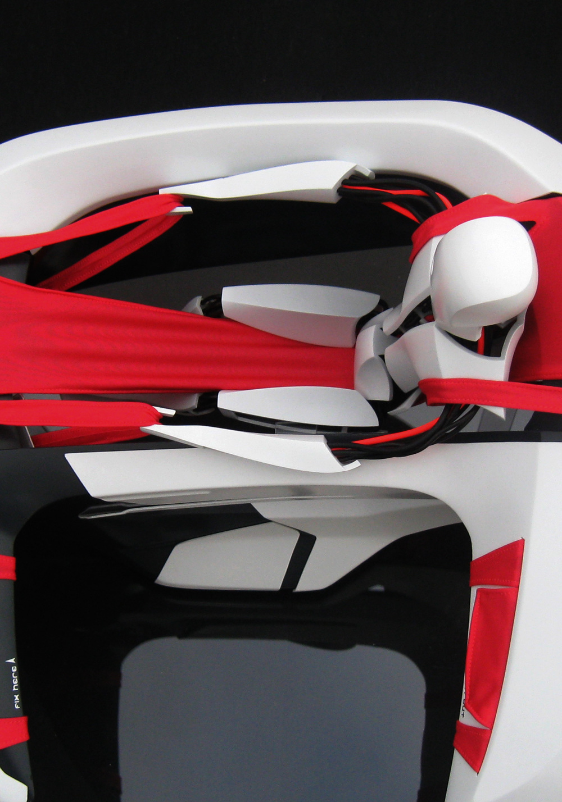
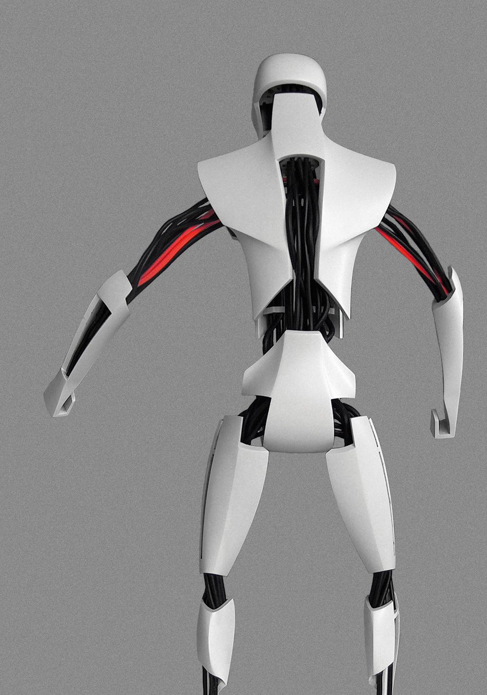
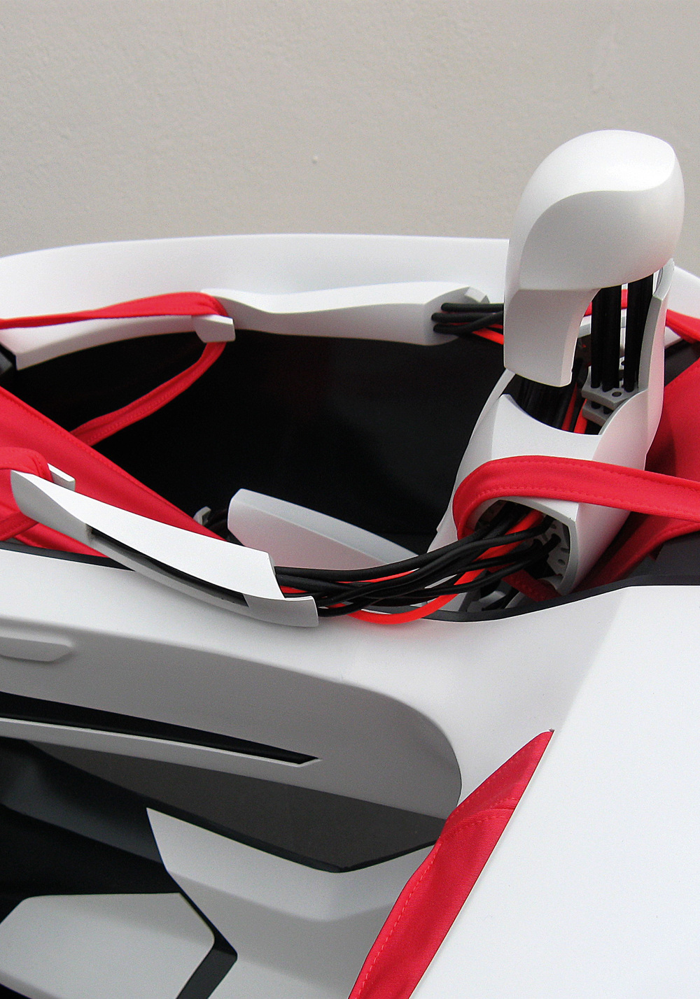
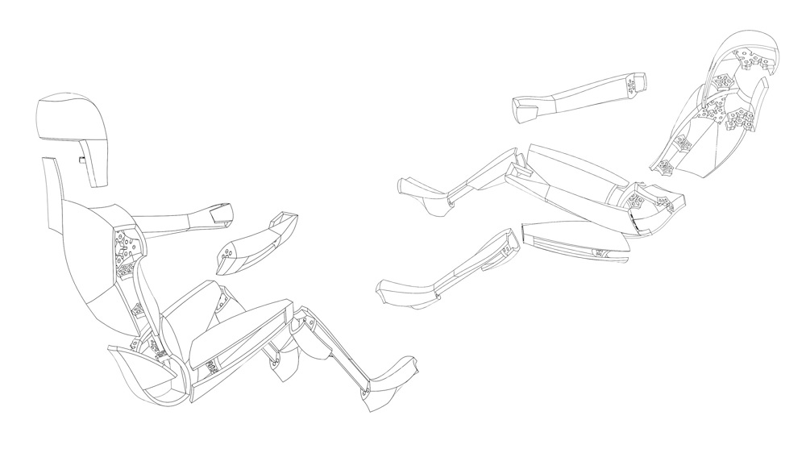

Prototype








The idea was to design a 1:4 scale robot that sits inside a car interior. The seperate, rapid prototyped body parts are designed to save material and to keep the production costs as low as possible. The bodyparts are connected through a mixture of wires and rubber sleeves. The 1:4 scale model has 100% human proportions. I designed the robot and modeled it in Autodesk Alias. The robot is flexible so you can put him in any position you want. Car Designer Stefan Göppel designed the car interior.
Die einzelnen Rapid Prototype Teile sind möglichst materialsparend entworfen um die Kosten für den Druck niedrig zu halten. Die Einzelteile werden durch eine Mischung aus Drähten und Gummischläuchen zusammen gehalten. Das 1:4 Modell entspricht menschlichen Proportionen. Entwurf und Modeling in Autodesk Alias. Der bewegliche Roboter kann in beliebige Posen gebogen werden. Das Fahrzeuginterior ist von Stefan Göppel entworfen und gebaut worden.